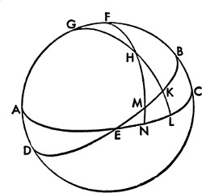
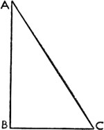
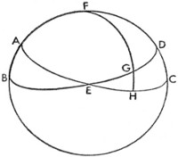
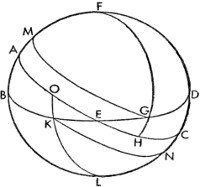
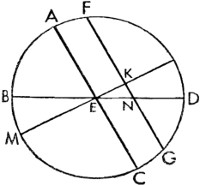

4. Ekliptiğin Dışında Kalan, Enlemi ve Boylamı Bilinen Bir Yıldızın Yükselimi ve Açılımı Nasıl Belirlenir ve Ekliptik Gökyüzünü Kaç Derecede İkiye Böler?
Bütün bunlar ekliptik, ekvator ve onların kesişimlerine göre düzenleniyor. Ancak günlük devinimlerle ilgili olarak sadece Güneş'in görünmesinin nedenlerinin bulunmasıyla ekliptiğin belirdiği yerleri bilmek değil, aynı zamanda enlemleri ve boylamları bilinen ancak ekliptiğin dışında kalan sabit ve gezici yıldızlarla ilgili açılımın ve ekvatordan ölçülen yükselimin benzer bir gösteriminin olduğunu bilmek de önemlidir. Bu yüzden ekvatorun ve ekliptiğin kutupları boyunca çizilmiş bir ABCD dairesi olsun; AEC de ekvatorun F kutuplu yarım dairesi olsun. BED, G kutuplu ekliptiğin yarım dairesi olsun ve ekvatorla kesişimi de E noktasında gerçekleşsin.
Bu durumda bir yıldız boyunca G kutbundan bir GHKL yayı çizilsin ve yıldızın konumu da H noktasıyla verilsin. Dairenin FHMN çeyreği, günlük devinim kutbundan H boyunca insin. Böylece H noktasındaki yıldızın, M ve N noktasıyla aynı meridyene indiği açıktır ve HMN yayı, ekvatordan beliren yıldızın yükselimini oluşturur; EN ise onun sağ küredeki, aradığımız açılımıdır. O halde KEL üçgeninde KE kenarı ve KEL açısı belirlendiğinden, EKL açısı da 90º olduğundan; buna göre küresel üçgenlerle ilgili dördüncü teorem sayesinde KL ve EL kenarlarıyla birlikte KLE açısı da belirlenir. Buna ek olarak HKL yayı da bulunur. Bu durumda HLN üçgeninde, HLN açısı belirlenir; LNH açısı 90º olup HL kenarı da bulunur. O halde küresel üçgenlerle ilgili dördüncü teorem sayesinde geri kalan kenarlar da belirlenebilir: Yıldızın yükselimi HN, LN ve kalan NE uzunluğu, yani kürenin ekinokstan yıldıza dönüş uzaklığını veren açılım. Ya da başka bir yolla, öncekinde olduğu gibi, ekliptiğin KE yayını LE'nin açılımı olarak alırsanız; LE, açılımlar tablosu sayesinde bulunacaktır ve bunun yanında LK de LE'ye uyan yükselim olarak belirlenecektir. KLE açısı da meridyen açıları tablosu sayesinde bulunacaktır ve buradan hareketle, gösterdiğimiz gibi, geri kalan kenarlar ve açılar da öğrenilebilir. Daha sonra EN açılımı sayesinde ekliptikteki EM yayının kaç derece olduğu da bulunur. Bütün bunlara uygun olarak M noktasıyla birlikte yıldız gökleri ikiye böler.
5. Ufkun Kesitleri Üzerine
Bir dik kürenin ufku, eğik kürenin ufkundan farklıdır. Buna göre ekvatorun dik olduğu ya da ekvatorun kutuplarından geçen ufka dik ufuk denir. Ekvatorla açı yapan ufka eğik kürenin ufku diyoruz. Bu yüzden bir dik ufukta bütün yıldızlar doğar ve batar; günler her daim gecelere eşittir. Zira bu ufuk, günlük hareketle çizilen bütün paralel çemberleri ikiye böler ve onların kutuplarından geçer; dahası meridyen dairesiyle ilgili olarak açıkladığımız husus burada da söz konusudur. Yine burada günü Güneş'in doğuşundan batışına uzanan dilim olarak alırız; çoğunluğun anladığı gibi, aydınlıktan karanlığa uzanan dilim olarak değil; yani sabahın erken saatlerindeki alacakaranlıktan ilk sokak ışıklarına değil. Burada burçların doğuşu ve batışıyla ilgili olarak da çok şey söyleyeceğiz. Buna karşılık Dünya'nın ekseninin ufka dik olduğu yerde herhangi bir doğuş veya batış meydana gelmez; fakat bütün yıldızlar dairesel dönüşte olup Güneş etrafındaki yıllık dönüşten başka bir hareketle etkilenmedikçe, ya hep görünür ya da hiç görünmez. Sonuç olarak bir gün sürekli bir yılın yarısı kadar sürer; yılın geri kalan kısmını ise gece oluşturur ve ufuk ekvatorla çakıştığından yaz ile kış birbirinden ayırt edilemez. Dahası, eğik bir kürede belirli yıldızlar doğar ve batar, kimileri her daim görünür, kimileri de hiç görünmez. Gündüzlerle gecelerin eşit olmadığı yerlerde eğik ufuk, eğimiyle orantılı iki paralel çembere teğet geçer. Ve bu çemberlerden görünen kutba daha yakın olan her daim görünen yıldızların sınırını, öte yandan görünmeyen kutba daha yakın olansa hiç görünmeyen yıldızların sınırını oluşturur. Buna göre ufuk, tümüyle bu sınırlar arasında kaldığından, ortadaki bütün paralel çemberlerini eşit olmayan yaylara böler; bir tek, paralellerin en büyüğü olan ekvator istisnadır; büyük daireler de birbirini keser. Bu durumda üst yarıküredeki bir eğik ufuk, güneydeki görünmeyen kutup tarafındaki yaylardan daha büyük olan görünen kutup yönündeki paralellerin yaylarını keser; bunun tam aksi de, görünmeyen yarıküredeki durumdur. Güneş, günlük hareketten ötürü bu ufuklarda görünür ve gündüzlerle gecelerin eşitsizliğine sebep olur.
6. Öğlen Gölgeleri Arasındaki Farklılıklar
Öğlen gölgelerindeki farklılıklardan ötürü kimilerine Periscii, kimilerine Amphiscii, kimilerine de Heteroscii denmiştir. Periscii'ye circumumbratiles diyebiliriz, yani "Güneş'in, her tarafına gölge düşürdüğü kişiler." Böyleleri, ufkun tepe noktası ya da kutbuyla Dünya'nın kutbu arasındaki mesafenin dönencelerle ekvator arasındaki mesafeden daha az olduğu veya daha fazla olmadığı yerlerde yaşar. Bu paraleller, her daim görünen ya da her daim karanlıkta kalan yıldızların sınırları dönencelerden daha büyük ya da onlara eşit olduğunda, ufkun ulaştığı yerlerdir. Ve bu yüzden yaz Güneş'i her daim görünen yıldızların arasından yükselerek bir işaretçinin gölgesini her bir yöne düşürür. Fakat ufkun dönencelere yaklaştığı yerde, dönenceler her daim görünen ve her daim karanlıkta kalan yıldızların sınırlarını oluşturur. Bunun dışında, gece yarısı olduğunda; Güneş kış gündönümünde Dünya'yı sıyırmış görünür; bu zaman noktasında bütün ekliptik çemberi ufukla çakışır; bir yanda altı burç yükselir, diğer yanda altı burç batar ve ekliptiğin kutbu ufkun kutbuyla çakışır. İki tarafa birden öğlen gölgesinin düştüğünü görenler, yani Amphiscii ise dönencelerin arasında yaşar; bu gölgeler dönencelerin arasındaki eskilerin media zona[105] dediği bölgede meydana gelir ve Euclides'in fenomenlere dair ikinci teoreminde de gösterildiği gibi, ekliptik çemberi bu bölgenin üstünden iki defa geçtiğinden işaretçilerin gölgeleri burada iki yöne düşer: Güneş, ileri ve geri hareket ettiğinden, işaretçiler gölgelerini bazen güneye, bazen de kuzeye düşürür. Bu iki yön arasında yaşayan bazılarımız da heteroscii'dir; zira öğlen gölgelerinin sadece bir yöne, yani kuzeye doğru düştüğünü görüyoruz. Eski matematikçiler yerküreyi genelde Meroe, Siena, Alexandria, Rodos, Hellespontus, Orta Pontus ya da Boristhenes, Byzantium gibi yedi iklim bölgesine ayırma eğiliminde olmuşlarsa da en uzun günler arasındaki farktan başka tekil benzerlikleri de işlemişlerdi. İşaretçilerle kutbun eğimini ya da her bölgenin enlemine göre ekinoks ve gündönümü vakitlerinde öğlen gölgelerinin uzunluğunu da gözlemlemişlerdi. Bahsettiğimiz gibi, eskilerin bilmediği ekliptiğin değişken eğimine göre ya da daha açık söylemek gerekirse, bunların bağlı olduğu ekvatorun ekliptik düzlemine olan değişken eğimine göre bütün bu rakamlar zaman içinde değiştiğinden, hesapların da onların zamanında olduğu gibi tümüyle aynı kalmadığı açıktır. Fakat kutbun yükseltileri veya konumların enlemleri ve göksel ekvatorun gölgeleri eski çağın keşfettiği ve kaydettiği bilgilerle uyumludur. Bu durum, ekvatorun yeryüzü küresine bağımlı olmasından ötürü zorunlu olarak böyledir. Bu bölgeler, özel günlerde düşen gölgeler sayesinde değil de her daim aynı kalan ekvatordan uzaklıkları sayesinde daha doğru bir biçimde belirlenip tanımlanabilir. Fakat dönencelerdeki değişim çok hassassa da güney bölgelerdeki günlere ve gölgelere dair hassas ayrım, kuzeye doğru gidildikçe daha belirgin olur. Buna göre işaretçilerin gölgelerinden hareketle Güneş'e bir yükseklik ve buna karşılık gölgeye de bir uzunluk değeri verilebilir. Bu yolla BC gölgesini düşüren bir AB işaretçisi varsa, işaretçi ufuk düzlemine dik ineceğinden, düzleme inen dik çizgilere dair açıklamadan ötürü ABC açısı her daim dik olmalıdır.

Eğer buna AC de katılırsa, ABC dik üçgenine kavuşmuş oluruz ve Güneş'e bir yükseklik değeri verilirse ACB açısı da bulunmuş olur. Doğrusal üçgenlerle ilgili ilk teorem sayesinde AB işaretçisinin BC gölgesine oranı da bulunacaktır ve BC uzunluk olarak belirlenecektir. Dahası, tam ters şekilde AB ve BC'nin saptanmasıyla doğrusal üçgenlere dair üçüncü teorem sayesinde ACB açısının kaç derece olduğu ve bu anda Güneş'in yüksekliğiyle gölgenin uzunluğu da bulunur. Eskiler, bu yolla yeryüzü küresinin bölgelerini belirlerken bazen ekinokslarda bazen de gündönümlerinde öğlen gölgelerinin uzunluklarını bulmuştur.

7. Bir Küredeki En Uzun Gün, Yükselme Mesafesi ve Eğimin Başka Bir Küreden Hareketle Bulunması ve Günler Arasındaki Farklar
Bu şekilde bir kürenin eğriliği ya da ufkun eğimi sayesinde, günler arasındaki farklar ve Güneş'in yükselme mesafesiyle birlikte en uzun ve en kısa günü aynı anda göstereceğiz. Burada yükselme mesafesi yaz gündönümü ile kış gündönümü arasındaki Güneş doğuşlarına denk gelen ufuk yayıdır ya da gündönümlerinin ekinokslardaki Güneş doğuşundan uzaklıkları toplamına eşittir. Buna göre ABCD bir meridyen dairesi olsun. BED, doğudaki yarım küreye ait ufkun yarım dairesi; AEC de kuzey kutbu F olan ekvatorun benzer yarım dairesi olsun. G noktası, yaz gündönümündeki Güneş'in yükselmesini göstersin ve büyük kürenin hareketi, ekvatorun F kutbunda meydana geleceğinden, kaçınılmaz olarak G ve H noktaları aynı zamanda ABCD meridyenine uyacaktır; zira paralel çemberler, onlardaki aynı yayları kesen büyük dairelerden geçen aynı kutupların etrafında yer alır. G noktasındaki doğuştan öğlen vaktine kadarki aynı süre AEH yayını da belirlediğinden, gece yarısından gün doğumuna kadar geçen süre de yarım dairenin geri kalan, yerin altındaki yayını, yani CH'yi belirler.

Bu durumda AEC bir yarım dairedir ve ABCD'nin kutbu boyunca çizildiklerinden AE ile EC de dairelerin çeyrekleridir. Buna uygun olarak EH, en uzun gün ile ekinoks arasındaki farkın yarısı; EG ise ekinokstakiyle gündönümündeki Güneş'in doğuşu arasındaki uzaklık olacaktır. Buna göre EHG üçgeninde kürenin eğimini oluşturan GEH açısı, AB yayı ve GH açısının dik olmasından ötürü bulunmuş olur; GH kenarı da yaz dönencesinden ekvatora olan uzaklık olarak bulunur; diğer kenarlar da küresel üçgenlerle ilgili dördüncü teorem sayesinde bulunur. EH kenarı en uzun gün ile ekinoks arasındaki farkın yarısı; GE kenarı da Güneş'in yükselme mesafesidir. Dahası GH kenarıyla birlikte EH kenarı, en uzun gün ile ekinoks arasındaki fark ve EG bulunur. Küredeki eğimin E açısı da elde edilir ve buradan hareketle ufkun üstündeki kutbun yüksekliği, yani FD de bulunur. Ancak ekliptikteki G noktası dönence değil de başka bir yer olarak alınsa bile, EG ve EH yayları açıkça bilinecektir; zira yükselimler tablosu sayesinde, GH'nin üzerinde yükselim yayı ekliptiğin derecesi olarak bulunacaktır ve aynı yolla kalan kısım da gösterilebilir. Buradan hareketle dönenceden eşit uzaklıktaki ekliptiğin dereceleri ekinokstaki gün doğumuyla aynı dereceler arasındaki ufkun eşit yaylarını keser ve günlerle gecelerin uzunluğunu tersten eşitler. Yani derecelerden her biri aynı yükselime sahip olduğundan, ekliptiğin bu derecelerinden geçen paraleller birbirine eşittir.
Fakat eşit yaylar, ekliptikteki iki derece ile ekinokstaki kesişim arasında alındığında yükselme mesafeleri yine eşit, fakat farklı yönlerde olacaktır; günlerle gecelerin sürelerinin tersten eşitliği de söz konusudur; zira ekinoksun her bir tarafında süreler, ekinokstan eşit uzaklıktaki burçların ekvatordan yükselimlerinin eşit olmasından ötürü eşit paralel yayları belirler. Buna göre aynı şekil üzerinde paralellerin G ve K noktalarında BED ufkunu kesen GM ve KN yaylarıyla birlikte L kuzey kutbundan itibaren büyük dairenin LKO çeyreği çizilsin; buna göre HG yükselimi KO yükselimine eşittir; buradan birinin iki kenarının diğerinin iki kenarına eşit olduğu DFG ve BLK üçgenleri ortaya çıkacak: FG, LK'ye; kutupların yükseklikleri de birbirine eşittir ve D açısı, B açısına, o da 90ºye eşittir. Bu nedenle DG tabanı da BK tabanına eşittir. O halde burada EG kenarı, EK kenarına; GH kenarı, KO kenarına; KEO dik açısı, GEH dik açısına; EH kenarı, EO kenarına ve EH ile 90ºnin toplamı, OE ile 90ºnin toplamına eşit olur. Dolayısıyla AEH yayı OEC yayına eşittir. Fakat gösterildiği gibi, paralel dairelerin kutupları boyunca çizilen büyük daireler benzer yayları kestiğinden, GM ve KN de benzer ve eşit olacaktır. Bütün bunlar farklı bir şekilde de ortaya konabilir. Aynı yolla E'nin merkez olduğu bir ABCD meridyen dairesi çizilsin. Ekvatorun çapı ve iki dairenin ortak kesiti AEC olsun; BED, ufkun çapı ve meridyen çizgisi; LEM, kürenin ekseni; L, görünen, M de görünmeyen kutup olsun. AF, yaz gündönümünün uzaklığı ya da başka bir yükselim olarak alınsın; AF'ye göre GF de meridyenle ortak kesiti ve paralelin çapı olarak çizilsin; bu durumda FG, K noktasında ekseni, N noktasında da meridyen çizgisini kesecektir. Buna göre, Posidonius'un da açıkladığı gibi bu çizgiler, birbirinden uzaklaşmayan ya da içlerinden birinin diğerine yönelmediği, ancak aralarındaki dik çizgilerin eşit olduğu paralel çizgilerdir; KE, AF'nin iki katını ayıran kirişin yarısına eşittir. Benzer şekilde KN, yarıçapı FK olan paralel çember yayının iki katını ayıran kirişin yarısı olacaktır. Ve bu yayın iki katı, ekinokstaki gün ile diğer gün arasındaki farka eşittir. Bu doğrudur; zira bu çizgilerin ortak kesitler ve çaplar olduğu tüm yarım daireler, örneğin eğik ufkun BED'si, dik ufkun LEM'si, ekvatorun AEC'si ve paralelin FKG'si, ABCD dairesindeki düzleme diktir. Ve Euclides'in Elementler'de, on birinci kitabın XIX. bölümünde gösterdiği gibi, bir diğeriyle oluşturdukları ortak kesitler, E, K ve N noktalarında aynı düzleme diktir; on birinci kitabın VI. bölümünde gösterildiği gibi, bu ortak kesitler de birbirine paraleldir. Ve K, paralel çemberin; E de kürenin merkezidir. EN, paraleldeki gün doğumuyla ekinokstaki gün doğumu arasındaki farka eşit olan ufuk yayının iki katını ayıran kirişin yarısıdır. Buna göre çeyreğin diğer kısmı olan FL ile birlikte AF yükselimi bulununca, AF yayının iki katını ayıran kirişin yarısı olan KE ve FL yayının iki katını ayıran kirişin yarısı olan FK, AE 100.000 birim olmak üzere, ortaya çıkmış olacaktır.

Fakat EKN dik üçgeninde KEN açısı, kutbun DL yüksekliği sayesinde bulunur ve diğer KNE açısı AEB'ye eşittir; zira eğik kürede paralellerin ufukla eğimi eşittir ve kenarlar yarıçapın 100.000 birim olduğu durumda aynı uzunluktadır. Buna göre KN, yarıçap FK 100.000 birim iken, bulunacaktır; zira KN ekinokstaki gün ile paraleldeki bir gün arasındaki mesafe kadar olan yayı ayıran kirişin yarısına eşittir ve bu yay da –paralel çemberi 360º olmak üzere– benzer şekilde bulunur. Buradan, FK'nin KN'ye oranının, FL'nin iki katını ayıran kirişin yarısının AF'nin iki katını ayıran kirişin yarısına oranıyla AB'nin iki katını ayıran kirişin yarısının DL'nin iki katını ayıran kirişin yarısına oranına eşit olduğu anlaşılıyor. FL'nin iki katını ayıran yarısının AF'nin iki katını ayıran kirişin yarısına oranıyla AB'nin iki katını ayıran kirişin yarısının DL'nin iki katını ayıran kirişin yarısına oranı, FK'nin KE ile birlikte EK'nin KN'ye olan oranına eşittir. Yani EK, FK ile KN arasında bir değer olarak alınabilir. Benzer şekilde BE'nin EN'ye oranı, BE'nin EK'ye, KE'nin de EN'ye olan olan oranına eşittir, tıpkı Ptolemaeus'un küresel dilimlerden hareketle daha detaylı bir şekilde gösterdiği gibi. Buna göre sadece günlerle gecelerin eşitsizliğinin hesaplanabileceğini değil, aynı zamanda, paralellerdeki yükselimleri günlük hareketin verilmesiyle bulunabilen Ay ve yıldızlarla ilgili olarak da aşağıdaki tablolardan ufkun üzerinde bulunan paralel dilimlerinin ayırt edilebileceğini ve buradan hareketle Ay ile yıldızların doğuş ve batışlarının kolayca anlaşılabileceğini düşünüyorum.